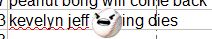

Preseason writeup was here.
Three significant figures generally used. Images created courtesy of LibreOffice Calc.
Information gathered from enterprising individuals of the Blaseball Maincord and SIBR discord.
How many players will be incinerated from active play, from the 24 teams, during the main 90 days of the season?
This will only count incinerations in specific. New and innovative ways to die will not be counted, and I will assume that incinerations are lethal.
In Season 2β, 16 players from 20 teams were incinerated over 99 days.
In Season 3β, 26 players from 20 teams were incinerated over 99 days.
Huh, good predictions. 12 is a lot for a season that's split among 5 weathers, but also small compared to Mayhem Seasons of yore.
Arguably, 14 is also the right answer -- There were 14 attempts at rogue intervention, but 2 of them are favorable. I'll let you figure which one is the true result.
How many players will be incinerated over season 2 (NEW), outside of the main season?
This will primarily count the postseason and election results.
Just off, but I think most people had the right idea.
Postseason was... quiet. The only incineration is due to the one Strike blessing, and overall, the blessings were mild. Would the Rogue Umpire be as active after the election? Let's find out!
Star player Terrell Bradley's alternate is called.
How many players in active play will become alternated over the 90 days of the main season?
I believe most people expected five weathers, but it looks like didn't expect the dial to be about even between the four umps!
The end result was very close to incineration results. 12 players were alternated, and 3 had favorable rulings.
Star player Zephyr McCloud is Cursed.
How many deaths will be directly attributable to Zephyr McCloud over the 90 days of the main season?
Zephyr didn't kill anyone! Not even accidentally!
...But on a similar vein, let's recount Bard Umpire's interventions. there were 3 more curses, 5 dodges, and 3 favorable rulings, for a total of 11 attempts.
Özlem Suttner was among the cursed, but it looks like the championship cleared the curse. There's... probably going to be a lot more player movement in the coming seasons.
Star player Simon Haley Swears in.
How many players will enter the shadows from active play over the 90 days of the main season?
Here's a weird one! On one hand, Horizon weather is still around to stuff people into the shadows, but Knight Umpire is now also here to send people out.
Alright, let's sort out the mess. From the Horizon, 3 players crashed directly onto other people, and 11 more crashed right into the fields.
From the Knight Umpire, 5 players swore, 6 players parried the swear, and 1 had a favorable ruling.
Me, I'd count 8 = 3 (Horizon) + 5 (Knight), but you can make a strong argument for 6 more (14), or go maximalist with 26.
Nobody picked any of those numbers. Weird.
Breckenridge Breaks.
What's your vibe on Jazz Hands' calamitous fate over the course of the next season?
The Broken Ridge ended the season with a fairly good record (49-41, #2 at Awful Evil), but had a significant loss of stats with Bonk Jokes's alternation.
Nothing happened to them during the elections, which isn't bad, but they're well set to lose the arms race going on elsewhere.
All things considered? Things are pretty normal at the Broken Ridge.
Free form prediction, 60 character limit. Make it hot, no scope, aim high.
ing dies" title="hee hee">Well, you tried. Anyways, some choice predictions:
At least 4 new weathers
There are 4 different types of eclipse weather, 1/umpire.
yep, yep
she breakin my ridge till i jazz hands
NO
Zephyr McCloud's curse causes feedback on "loss" to not lose
Can't Lose means Feedbacking to a winning team.
Zephyr thoroughly shuffles the Awful Good by hopping teams
cursed players swap teams if their current team loses
i think zeph will die or switch to the winners if he loses
A popular guess. I think most people expected feedback if at all, but it turned out to be closer to Roaming.
zephyr mcloud causes crowvertime 3, the lovers are there
Not quite, but there were a lot of spillovers, and the Lovers were there.
Someone will keep playing while shadowed or dead
Half a point for predicting an old favorite pseudo-mechanic to return. At least one player completed their at-bat despite incinerating.
Parker I dies/is alted within 24 hours of play beginning.
One of the alternates called will be Parker’s.
SOMETHING happens to Parker MacMillan (original flavour)
parker “the commissioner” macmillan gets alternated again
Parker MacMillan the First will die.
Despite all odds (well, ok, he had a very good chance of making it out clean actually), nothing happened to Parker the First.
There will be an incineration during Postseason Finals
Nothing big happened this time around during the postseason. Alas.
the beams will break the single season win% record
The Sunbeams will prove that people should stop estimating
These are both wrong, but the Beams sure tried!
Knighted players will return to fight a dragon
We’re going to play chess
The Quest decides a team that plays in the shadows.
once the tournament begins, all the knights will be called
These guesses have not borne out, but among the umpire mechanics, Knighting is definitely the least known.
wh- uhhhh end of article. Good luck in Season 3. Maybe I'll pull another poll if there's something spicy incoming.